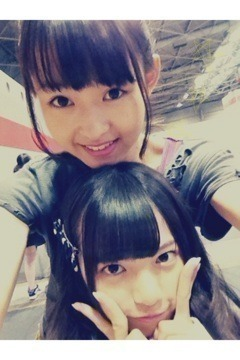

| 2012/09 23 Sun | 238回目*marika |
いつも読んでくださってる方、
初めて読んでくださった方、
コメントしてくださった方、
ありがとうございます。
昨日バスで口開けながら
爆睡してる間に
あみにぶちゅーされました。
その証拠ムービーまでも
録られたという。ひなちまに笑
その後、口にほこりが入らないように
口閉ざしてくれてありがとうね

なーんていい子なんだあああぁぁあ
そして、またねねに
起こしてもらったああぁぁあ
ねね様ーーーー
...
バイシクル個別握手会in大阪
2部 お団子
おねえたまとおそろっちやった


3部 ポニーテール
どちらも好評でした^^
昨日は幼かったけど、
今日は大人ぽいって⁇
照れる←ぇ
これ、私服っていうか
BLTのTシャツがメインなんだ

普通に私服かと思った方もいて、
なんだか嬉しかった。
着てくださったのも
めっちゃめっちゃ嬉しかったよー///
あ、スカートお気に入り。
来てくださったみなさん
ありがとうございました

個別はゆっくりお話できるね

はじめましての方も
握手できて嬉しかった！
毎回思うけど、本当元気になるなあ
これがにぎにぎパワーか！
 きらきら
きらきら
きらきら
来週名古屋でも個握あるし
楽しみです♪
**********
 部屋に自分のポスターとか
部屋に自分のポスターとか
貼ったりしてるんですか(笑？
 貼らん貼らん
貼らん貼らん
 まりかちゃんみたいに、
まりかちゃんみたいに、
私もリメイクしてもいい？？
ぜひっ‼
名古屋握手会でのメイクは
大人を意識したの？
いつものメイクよ
 バスケ派サッカー派？
どっちもできないけど...
バスケ派サッカー派？
どっちもできないけど...
今はサッカーかな！
お仕事もサッカー関係が多いし、
応援してるし。
**********

あすかの笑い方かわいい

顔ちっちゃすぎて見えない
さゆにゃんのぬいぐるみで
一緒に遊んでたよ
がうっち

おやすみなさい
まりか
コメント(165)
2012/09/23 23:00